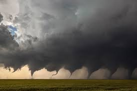

Franklin Weather Cast
Always bring your own sunshine.
☰
Home Page
Franklin
Greenville
Springfield
StormCenter
Gallery
Weathe Out Side
Beautiful day in a flower garden
The glimmer of the winter lake
Blue skies with the summer hills
Raining while we walk

Tornado line in the middle of nowhere
The beautiful fall trees light up the town